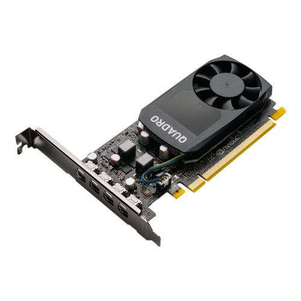

| Ekran kartı |
| Ekran Kartı Nedir? |
Ekran kartı, diğer bir adıyla grafik kartları,bilgisayar moonigöründeki her türlü yazı, grafik, resim film gibi şekillerin oluşturulmasında işlemci ile monitör arasında görev yapan adaptörlerdir.
Monitörlerde görülen her türlü çıkışlar ekran kartından gelen bilgilerdir.
|
| Ekran Kartı bilgisayarda ne işe yarar? |
Ekran kartının asıl görevi, işlemci, ram, hard disk gibi ara birimlerden, ana kart vasıtası ile aldığı bilgileri gerekli dönüşümleri sağladıktan sonra monitöre aktarmak ve bu görüntülerin kullanıcıya sunulmasıdır. Ekran kartı monitörde görüntü oluşmasını sağlar ve laptop ve bilgisayar kasalarında bulunur. İşlemci ile monitör arasında görev alan bir cihazdır. |
| Ekran Kartı nasıl çalışır? |
Günümüzde kullanılan VGA olarak bilinen ekran kartlarının çalışma presibi ana fikirde sayısal veri yollarını analog veriye çevirirler. Bilgisayarda bulunan bir işlemci, yazılımı ya da grafiksel görüntüyü ekran kartına ulaştırır.Gelen bilgiler, ekran kartı tarafından hesaplanır ve işlenir. Bu noktada ekran kartının üzerindeki dahili bellek sayesinde, hesaplanan bilgiler depolanır.
Ardından geometrik bilgiler ve diğer yapılması gerekenler ile birlikte ön belleğe depolanır. Bu noktada gelen bilgiler ve depolanan işlemler birleştirilir ve gerçek görünümü kazandırılır.
|